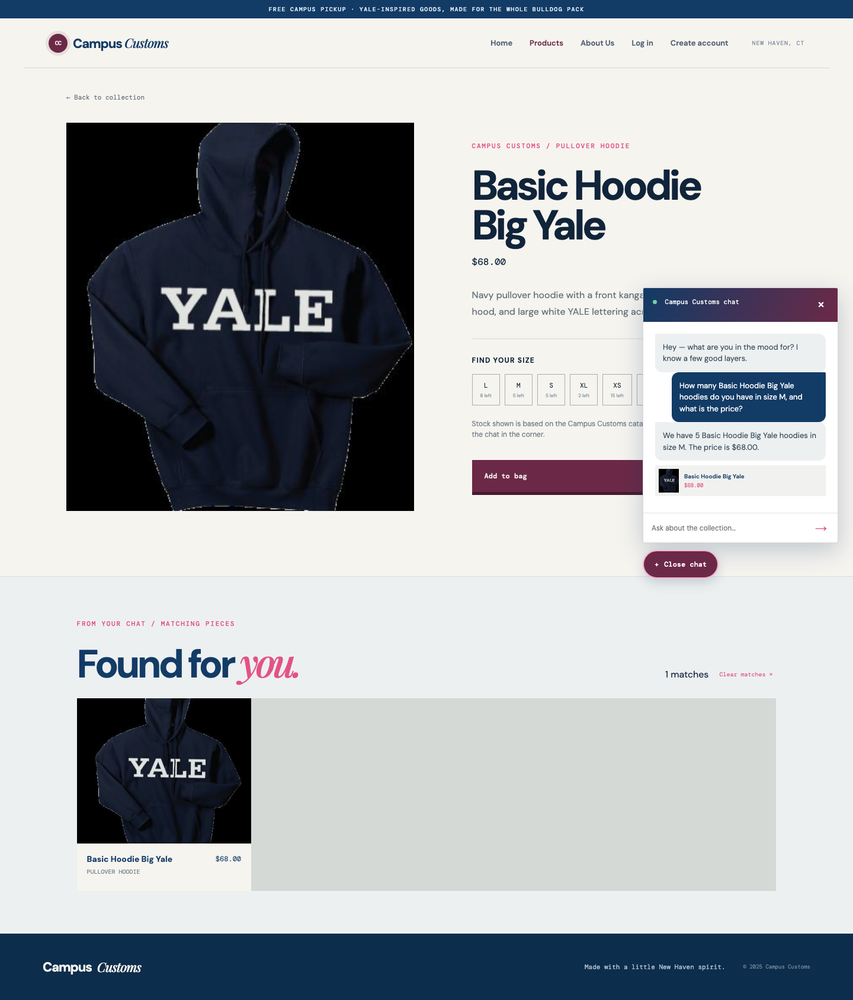
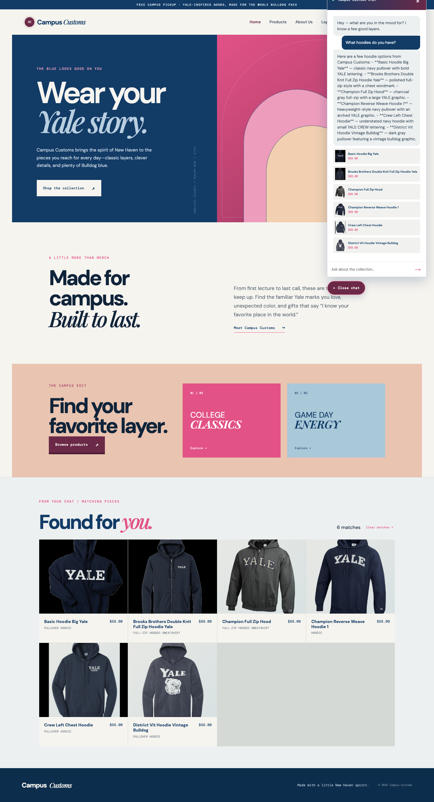
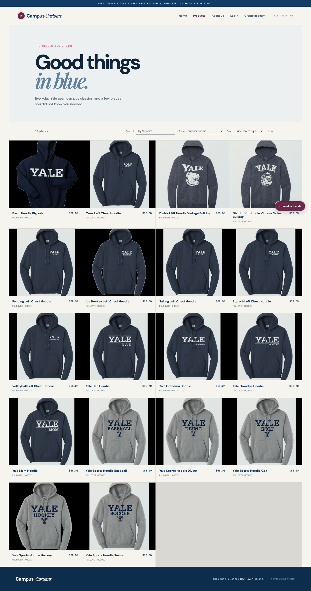

Campus Customs / HW 4 / Live verification
These screenshots document three working storefront behaviors tested against the running React frontend and FastAPI backend.
The shopper asks about a specific product and size from its detail page. The chat response reports the database-backed quantity and price, and includes a linked product card.

After the shopper asks, “What hoodies do you have?”, the agent returns structured product matches. The page adds a “Found for you” results area with images, names, prices, and cards that lead to product detail pages.

The products page lets shoppers narrow the catalogue by text and garment type, then choose a price sort. This reduces browsing effort and makes the collection easier to shop.
